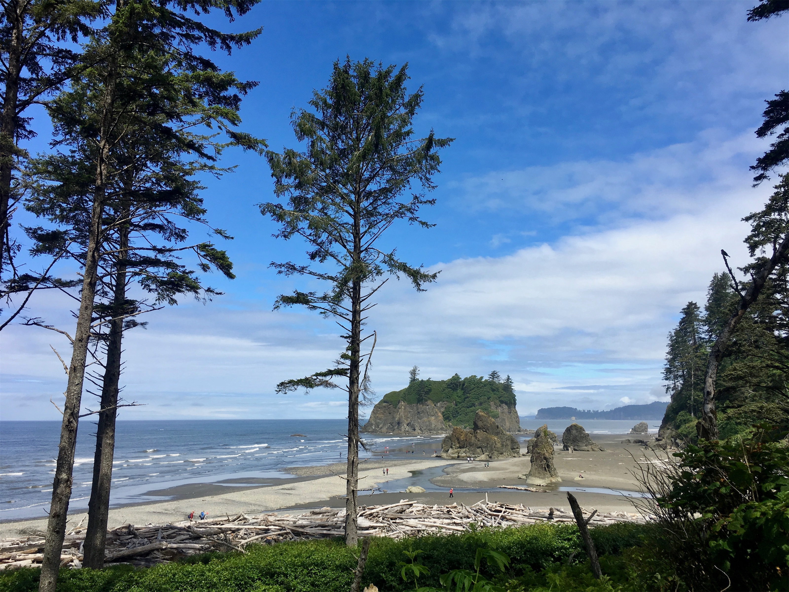

Saturday, Jul 7, 2018, 12:19 PM PDT
Hoh Rain Forest Visitor Center, Montesano, WA, United States
63°F Cloudy
63°F Cloudy
![]()
7/4 Crater Lake Lodge, OR -> Salem, OR 203 mi, 4 hr
7/5 Salem, OR -> Tacoma, WA 212 mi, 4 hr
7/6 Tacoma, WA -> Kalaloch Lodge, WA 153 mi, 3.5 hr
7/7 Kalaloch Lodge, WA -> Hoh Rain Forest Visitor Center, WA 40 mi, 1.25 hr
7/7 Hoh Rain Forest Visitor Center, WA -> La Push, WA -> Lake Crescent Lodge, WA 96 mi, 3 hr
7/8 Lake Crescent Lodge, WA -> Hurricane Ridge Visitor Center, WA 39 mi, 1.25 hr
Trip Total: 6,601 mi
From Crater Lake, we made our way northwest to I-5, and then straight north up the Willamette Valley, stopping overnight in Salem. The next day, we headed to visit Erin and Kellen and their cute new home in Tacoma. Erin gave us a nice tour of the town, which is clearly on the development upswing due to hyper-inflated Seattle prices, and we had a nice dinner at a restaurant called Primo. The next morning, we headed out for our clockwise tour of the Olympic Peninsula, and the National Park.
Olympic is the smorgasbord of parks. It has ocean, beach, rocks, meadows, forests, mountains, glaciers, and even a rainforest. The scenery and climate are constantly changing. We first stopped at the very nice Kalaloch Lodge, with a room overlooking the ocean and lots of driftwood. The restaurant there was especially good, with a spectacular ocean view. Even though it was mostly cloudy, cool, and spritzing rain, we liked it here. The next morning we headed into the Hoh Rain Forest, which averages 13 feet of rain a year and is covered with moss and ferns. We hiked the 0.8 mile Hall of Mosses trail, and headed back to the ocean in La Push to see more driftwood and rock beach. We settled in for the night at Lake Crescent Lodge, on a large, beautifully peaceful lake setting, and more good food with a view. The next morning, we headed for Hurricane Ridge, climbing high for an idyllic view of the glacier-dotted Olympic Mountains that reminded us of the Sound of Music.
It was nice to mark the middle of our trip with a nice visit with Erin and Kellen, and a park with such an incredible variety of experiences.
